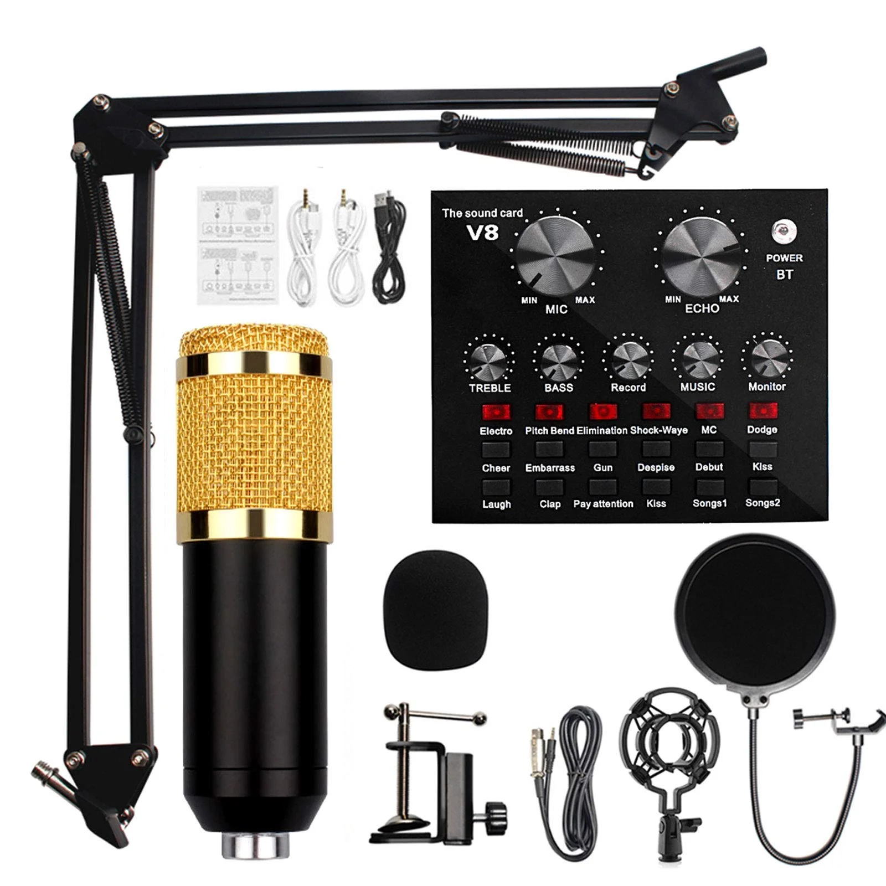

Best Audio & Entertainment in Peshawar: Practical Shopping Guide

Looking for the best audio & entertainment in Peshawar? This practical shopping guide helps you navigate the local market with confidence. Whether you're searching for microphones, earbuds, or recording equipment, the options available cater to both casual and professional needs. The listings include items like the Premium V8 Pro Condenser Microphone Kit and the K11 Dual Wireless Lavalier Microphone, which are ideal for streaming, podcasting, and content creation. However, some products, like the Premium Black AirPods, fall more into the personal audio category rather than comprehensive entertainment systems. This guide focuses on real-world use cases, helping you compare features, delivery options, and pricing to make informed choices. Understand what each product offers and how it fits your specific needs before making a purchase.
Quick buying check: Match the actual item to your task, check its measurements or compatibility, and compare the full delivered price. Read the listing and policies before you order. The examples below are catalog evidence, not hands-on test results.
Key benefits of choosing Audio & Entertainment carefully
- Better fit for your task: select the specification or design your situation needs.
- Clearer budget: compare the item, delivery and any required extras together.
- Fewer avoidable returns: resolve missing measurements and compatibility questions before ordering.
- More useful ownership: check how the item will be stored, cleaned and used.
Selection criteria and matching the actual task for Audio & Entertainment
When selecting audio and entertainment products, focus on how well they meet your specific needs. Consider the primary use—whether for home, travel, or casual listening. Check if the product supports the formats and devices you already own. For example, ensure compatibility with your phone or streaming services. Look for features that align with your lifestyle, such as portability or sound quality. Avoid buying based on brand alone; prioritize functionality that matches your daily activities.
Evaluate the reliability of the seller and the product’s reputation. Read reviews from other users in Pakistan to understand real-world performance. Pay attention to warranty and return policies, especially if purchasing online. Verify if the product offers good value for money by comparing features and prices. Be cautious of exaggerated claims in listings and focus on practical benefits. This helps ensure you get a product that performs as expected and meets your expectations.
Always consider the full cost, including delivery and any additional fees. Some products may have hidden charges that affect the total price. Check if the seller offers cash on delivery, which can provide added security. Ensure the product is suitable for your space and usage environment. For instance, a large speaker may not fit in a small room. Think about long-term use and whether the product will remain useful as your needs change.
Fit, dimensions, compatibility or edition checks for Audio & Entertainment
Fit is essential when purchasing audio and entertainment systems in Peshawar. Measure the space where the equipment will go to ensure it fits properly. Check the dimensions of the product against the available area. Consider the placement of speakers, screens, or other components to avoid installation issues. Always verify the product’s size details before buying to prevent returns or adjustments. A proper fit ensures both functionality and aesthetics in your setup.
Dimensions matter for compatibility with existing setups. Confirm that the product’s size matches the space and mounting requirements. Check if it fits with other devices like TVs, receivers, or stands. Ensure the product’s ports and connections match your current system. Verify the size of the screen, speakers, or components to avoid mismatched setups. Proper dimensions prevent installation delays and ensure a seamless user experience.
Compatibility checks are crucial for seamless integration. Confirm that the product works with your existing devices and systems. Check for compatible audio formats, input/output ports, and software support. Ensure the product supports local power standards and voltage requirements. Verify if it is suitable for the intended use, such as home theater or personal listening. Proper compatibility ensures the product functions as expected without additional modifications.
Quality evidence and limitations of listing claims for Audio & Entertainment
Quality evidence for listing claims in this context involves verifying product specifications, user reviews, and retailer credibility. Look for detailed descriptions, clear images, and customer feedback that align with the product’s stated features. In Peshawar, cross-referencing with local stores or trusted online platforms can help confirm accuracy. Be cautious of vague or exaggerated claims that lack supporting data. Reliable sources and direct inquiries to sellers can enhance trust in the listed information.
Limitations of listing claims often stem from incomplete or outdated information. Listings may not always reflect current stock, pricing, or product conditions. In Pakistan, regional availability and delivery constraints can affect the accuracy of online listings. Always check for updates and confirm details with the seller before purchasing. Relying solely on listings without verification can lead to misunderstandings or unsatisfactory purchases.
Practical advice includes focusing on verified sources and using multiple channels to validate claims. Compare listings across platforms and seek recommendations from local users. Pay attention to return policies and delivery timelines, which can vary significantly. In Peshawar, engaging with community forums or local shops can provide additional insights. Always prioritize transparency and clarity when evaluating product listings for audio and entertainment purchases.
Budget tradeoffs and the full delivered cost for Audio & Entertainment
Budget tradeoffs require careful evaluation of features versus cost to ensure the best value. Prioritize essential functions over unnecessary extras that may not be used regularly. Consider long-term expenses such as maintenance, energy consumption, or replacement parts. Compare prices across platforms but also verify seller reliability and customer service reputation. Look for deals that include delivery to avoid unexpected fees. Always check return policies and warranty terms before purchasing.
Full delivered cost includes all charges from purchase to arrival. Factor in shipping, taxes, insurance, and any additional fees. Some sellers may offer free delivery but charge for installation or assembly. Be aware of hidden costs that can inflate the total. Compare these totals across options to find the best value. Understanding this helps avoid surprises and ensures accurate budgeting. It also supports informed decisions that align with financial goals.
Practical advice includes researching thoroughly before buying. Use checklists to assess needs and options. Read reviews and check seller ratings for reliability. Confirm delivery timelines and costs upfront. Avoid rushing into purchases without proper evaluation. This approach reduces risk and ensures satisfaction. It also helps in making choices that are both cost-effective and suitable for daily use. Always verify product specifications and compatibility with existing systems.
Setup, care, storage and useful ownership for Audio & Entertainment
Setup in Peshawar requires careful planning to ensure optimal performance. Position devices away from direct sunlight and moisture to prevent damage. Use stable power sources and avoid overloading outlets. Follow manufacturer guidelines for assembly and configuration. Ensure proper ventilation for heat-sensitive components. Check all connections and cables before use to avoid operational issues. Consider the room layout and acoustics for better sound quality.
Care and maintenance depend on the type of equipment. Regularly clean surfaces with a soft cloth to remove dust. Avoid using harsh chemicals that may damage finishes. Keep devices away from extreme temperatures and humidity. Handle components with care to prevent physical damage. Refer to the user manual for specific care instructions. For audio systems, avoid exposing them to high volumes for extended periods.
Storage should protect items from environmental damage. Store in a dry, cool place away from direct sunlight. Use original packaging or sturdy containers for long-term storage. Keep devices in a stable location to prevent accidental falls. Avoid stacking heavy objects on top of sensitive equipment. Proper storage extends the lifespan and maintains performance. If storing for an extended period, disconnect power sources and cover items to prevent dust accumulation.
Common mistakes, arrival inspection and returns for Audio & Entertainment
Common mistakes when buying audio & entertainment in Peshawar include overlooking compatibility with existing devices or not checking warranty terms. Many buyers fail to verify if the product fits their space or connects properly with other equipment. Always confirm dimensions, power requirements, and connectivity options before purchasing. Avoid assuming all products are available locally; some may require special orders or online delivery. Double-check return policies and delivery timelines to avoid unexpected delays or costs.
Arrival inspection is crucial to ensure the product is undamaged and matches the order. Open the package in a well-lit area and check for visible damage or missing components. Test the product if possible, and document any issues with photos. If something is wrong, contact the seller immediately and follow their return procedure. Keep all packaging and receipts until the issue is resolved.
Returns can be complex, especially for online purchases. Understand the return window and any restocking fees before buying. Some sellers may require a return authorization number or a valid reason for the return. For cash on delivery, inspect the item before accepting it. If returning, use the provided shipping method and track the package. Always keep proof of return and communication with the seller to resolve any disputes efficiently.
Future changes and responsible shopping decisions for Audio & Entertainment
Future changes in the audio and entertainment market will likely bring more smart and connected devices. Stay informed about emerging technologies like voice control and app integration. These features can enhance usability and convenience. Keep an eye on trends that align with your lifestyle and needs. Being aware of future developments helps make more informed and lasting purchases. Look for products that support software updates and compatibility with new systems.
Responsible shopping decisions involve considering long-term value over initial cost. Look for products that offer durability and reliability. Check for warranties and customer support options. Choose brands with a good reputation for quality and service. This approach reduces the need for frequent replacements and supports sustainable consumption. Prioritize products that meet your specific needs rather than following trends. Assess how well the item fits into your daily routine and space.
Evaluate delivery options and return policies before purchasing. Understand the full cost including shipping and any additional fees. Verify if the product meets your specific requirements. Compare different sellers to find the best combination of price and service. This careful assessment ensures a more satisfying and responsible shopping experience. Check for local sellers with reliable delivery networks and clear return procedures. Be cautious of hidden charges and unclear terms.
A useful buying decision connects your actual task to a clearly described item. A category name, attractive photo or low headline price cannot replace checking what will arrive and whether it fits.
Illustrative Pakistan use cases for Audio & Entertainment
Illustrative: compare a fixed PKR budget
A student in Peshawar with a fixed budget wants to buy a microphone for online classes. They compare the listed prices of the K11 Dual Wireless Lavalier Microphone and the Premium V8 Pro Kit. They calculate the total cost including the delivery fee of 250 PKR. The K11 is cheaper but may not offer the same quality for long-term use. They choose the K11 to stay within their budget while getting a reliable option for short-term needs.
Illustrative: check fit for shared home use
A family in Peshawar needs a microphone for a home podcast. They check the compatibility of the Premium V8 Pro Kit with their existing setup. They ensure the sound card works with their computer and that the microphone stands are suitable for their space. They also confirm the kit includes all necessary accessories. This helps them avoid buying a product that doesn’t fit their setup or requires extra purchases.
Illustrative: plan delivery and arrival inspection
A person in a smaller town in Peshawar orders the Premium Black AirPods online. They expect delivery within 3-6 working days and plan to inspect the product upon arrival. They check the return policy in case the item is damaged or incorrect. They are cautious about the 250 PKR return fee and want to ensure the product meets their expectations before accepting it. This helps them make a confident purchase despite the distance.
Comparison and evidence from actual catalog listings
The following listing snapshot was recorded at 2026-10-22 05:40:20 PKT. These are seller-provided descriptions, not independent performance tests. A category label does not confirm that an item suits every task discussed in this guide. Check the linked item for its current price, availability, measurements and included accessories.
| Listed item | Snapshot price | Listing evidence and limits |
|---|---|---|
| Premium V8 Pro Condenser Microphone Kit With Sound Card Professional Recording Microphone Set With Audio Sound Card For Streaming And Podcasting | Rs 4,729 | Listing description: Premium V8 Pro Condenser Microphone Kit With Sound Card Delivers Professional Grade Audio Performance For All Your Recording Streaming And Podcasting Needs. Designed To Capture Clear And Detailed Sound This Comprehensive Kit Pairs A High Quality Condenser Microphone With A Versatile V8 Pro Sound Card Featuring Multiple Audio Effects And Controls. Whether You Are Broadcasting Confirm any unspecified detail with the store. |
| K11 Dual Wireless Lavalier Microphone for iPhone & Android – Dual Clip-On Bluetooth Mic, 2-Person Wireless Microphone with Reverb, Noise Reduction, Clear Sound for TikTok, YouTube, Vlogging, Podcast & Interviews | Rs 1,214 | Listing description: K11 Dual Wireless Lavalier Microphone for iPhone & Android. Perfect for professional recording, vlogging, YouTube, TikTok, podcasts, and interviews. Features noise reduction, reverb mode, and a clear sound output. Includes two clip-on microphones, a receiver (Type-C), and charging cable. Plug and play, high-performance wireless connectivity. Confirm any unspecified detail with the store. |
| Premium Black AirPods – Wireless Bluetooth Earbuds with Smart Touch, Powerful Bass & Stylish . | Rs 870 | Listing description: Premium Black AirPods — Wireless Bluetooth Earbuds with Smart Touch, Powerful Bass & Stylish Charging Case. Bluetooth wireless connectivity, smart touch control, deep bass, aur stylish . Confirm any unspecified detail with the store. |
Delivery and returns: Sasta Milaga currently lists Rs 250 delivery, free above Rs 5,000. Usual estimates are 2-4 working days in major cities and 3-6 elsewhere. Returns can be requested within 7 days; damaged or wrong items return free, while other returns cost Rs 250. Check delivery terms and return terms for current conditions.
Frequently asked questions about Audio & Entertainment in Pakistan
How do I choose Audio & Entertainment for my needs?
To choose Audio & Entertainment for your needs, consider the purpose—like streaming, recording, or casual use. Look for features that match your activities, such as clarity, connectivity, and ease of use. Think about the environment where you’ll use the product, like home or studio.
What should I check in the listing before ordering?
Check the listing for key details like included items, compatibility, and technical specs. Verify if the product meets your requirements, such as wireless capabilities or sound quality. Ensure the seller provides clear information on delivery, returns, and support options.
How do I compare the full cost in Pakistan?
Compare the full cost by adding the listed price to delivery fees and potential return charges. Check if the item qualifies for free delivery to save money. Factor in any additional costs like installation or accessories you might need.
How much is Sasta Milaga delivery and how long does it take?
Sasta Milaga currently lists Rs 250 delivery, with free delivery on orders above Rs 5,000. Usual estimates are 2-4 working days in major cities and 3-6 working days elsewhere. Read the linked delivery page for current conditions and allow for your specific address.
Can I return a damaged, wrong or unsuitable item?
The published return window is 7 days after delivery. Damaged or wrong items return free, while other returns carry a Rs 250 fee. Read the linked return policy, keep the packaging and report the issue promptly.
Are the product examples independently tested recommendations?
No. The examples are a dated snapshot of seller-provided catalog listings. We have not independently tested these items or verified customer outcomes. Prices and availability can change. Open each product page, compare the stated specifications with your needs and ask the store about missing details.
Conclusion
The best audio & entertainment in Peshawar offers a range of options for both casual and professional use, from microphones for streaming to wireless earbuds for daily listening. The available listings reflect a variety of products, though they are not independently tested or reviewed. When shopping, consider the listed price, delivery fees, and return policies, which vary by location. For a smoother purchase, check the product descriptions carefully, confirm delivery timelines, and ensure the item meets your specific needs. With cash on delivery available, buyers can make informed decisions based on the provided details. Always review the return and refund guidelines before finalizing your purchase.
Choose with a clear checklist. Browse Audio & Entertainment and compare current listing details. Read how to order before placing a cash-on-delivery order. Take time to confirm the item fits your needs.
Tags: best audio & entertainment in Peshawar, audio & entertainment online Pakistan, buy audio & entertainment online, audio & entertainment price in Pakistan, audio & entertainment comparison, audio & entertainment shopping checklist, audio & entertainment cash on delivery, how to choose audio & entertainment for everyday use, what to check before buying audio & entertainment online, compare audio & entertainment with delivery costs in Pakistan, audio & entertainment buying guide for Pakistani families, questions to ask before ordering audio & entertainment with COD
More guides
Air fresheners size fit compatibility Pakistan: Size, Fit and Compatibility Checklist
Compare Air Fresheners in Pakistan: listing details, fit and delivered costs. Read product, delivery and return information before ordering.
Umrah travel checklist: documents, packing and planning
A practical Umrah checklist: passport and visa documents, what to pack for Makkah and Madinah, health preparation and booking tips.
Air conditioners (split) size fit compatibility Pakistan: Size, Fit and Compatibility Checklist
Compare Air Conditioners (Split) in Pakistan: listing details, fit and delivered costs. Read product, delivery and return information before ordering.